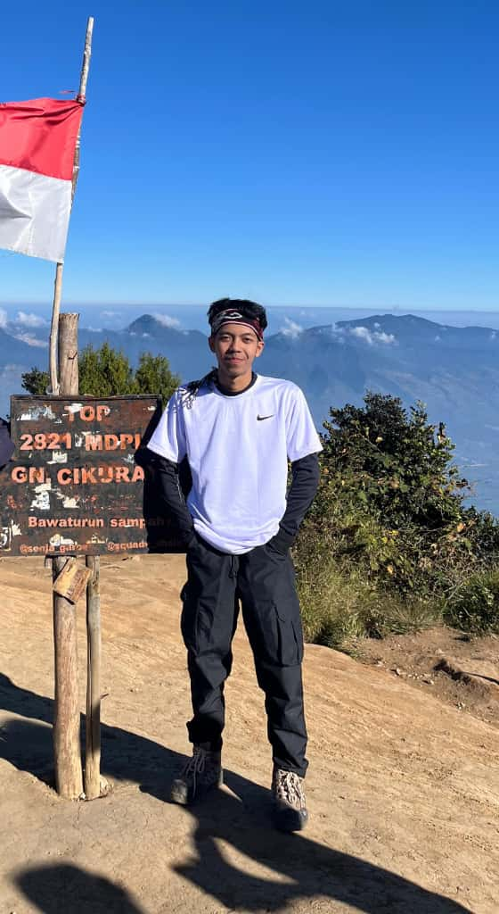
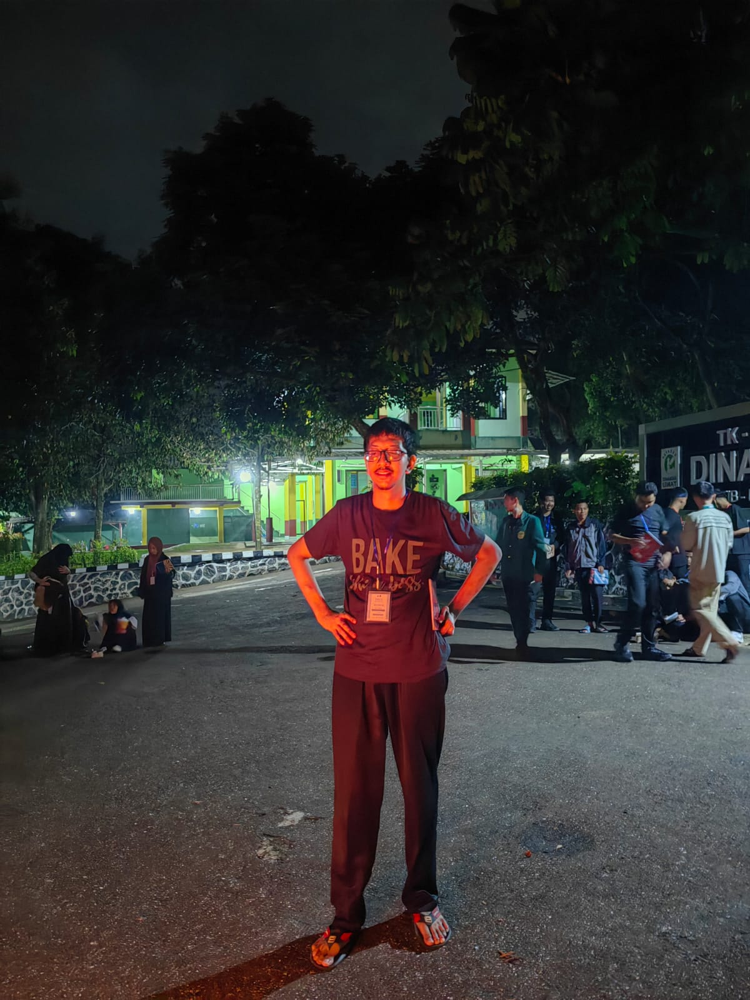
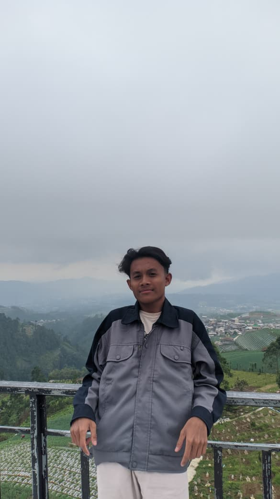
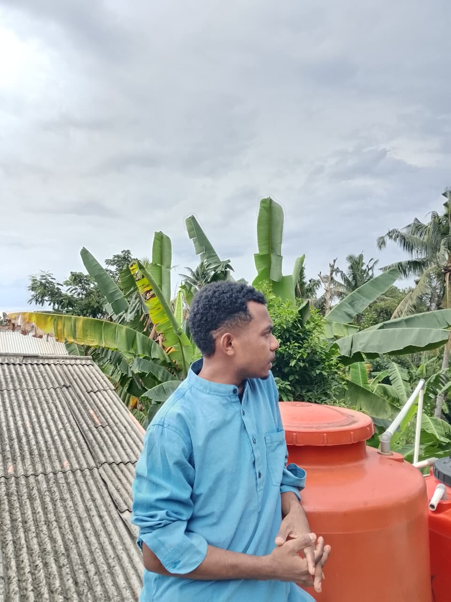
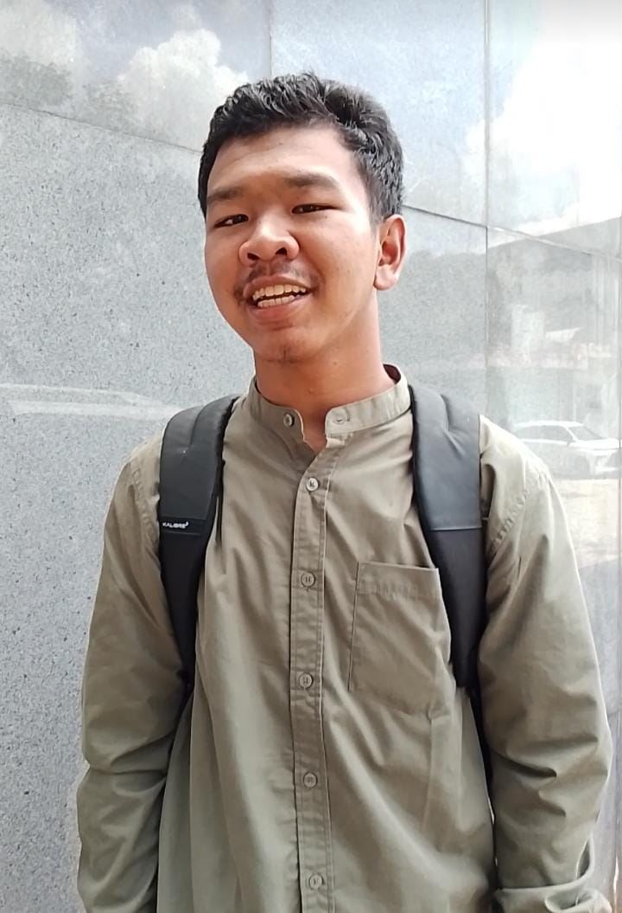

Dewan Ustadz

Ustadz Ghiza syafiq fathul islam S,AG

Ustadz Muhammad Billal Siddiq S,AG

Ustadz Tamam Munzir Tamam S,AG
Ustadz Muhammad Sultan Alfiansyah S,AG

Ustadz Syahim Hafidhul Haq S,AG

Ustadz Ali Mukhtar Mayantan sudak S,AG
